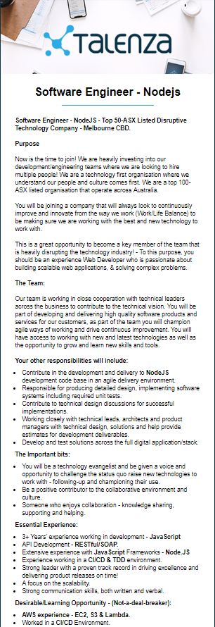
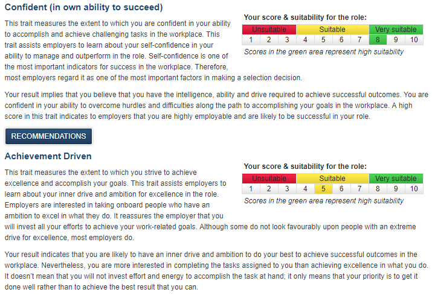
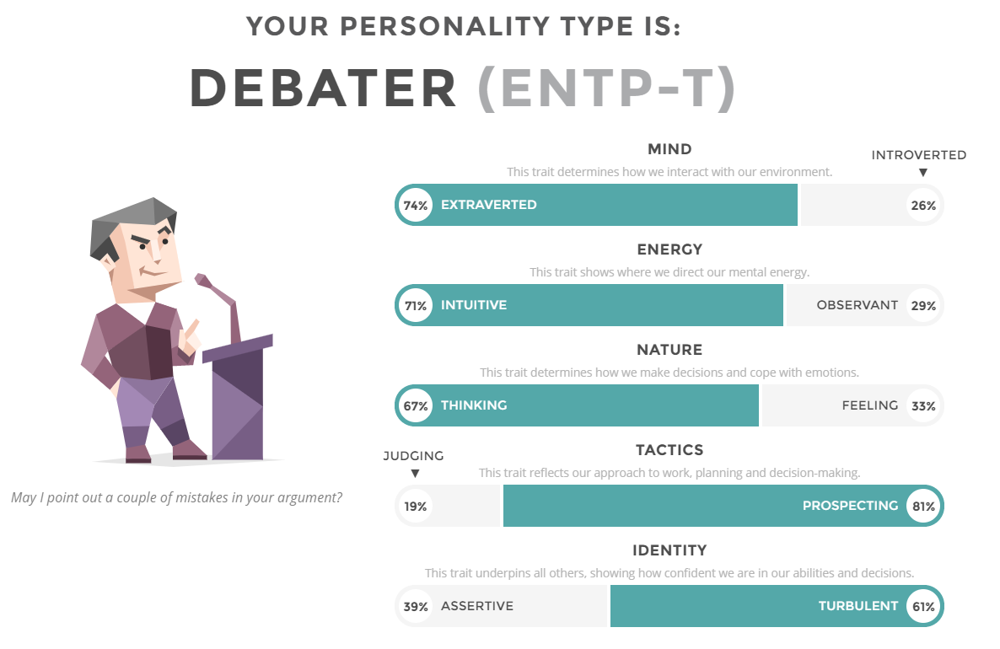
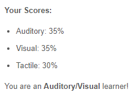

Assignment 1
Personal information
My name is Seth Underdown. My student ID is S3794214 and my email adress is S3794214@student.rmit.edu.au.
I have been born and raised in Australia and have been moving between Victoria and Queensland a lot. I completed year 12 and have done a few certificates during school and after completing school. I have German heritage that lived in Germany through World War II and had to steal from churches to survive. I have been learning some German so I can talk to that side of the family and learn more about there time in the war. I have a few hobbies like playing some instruments (Guitar, Piano, and Bass) and honing my butterfly knife skills. I am also a big history buff and love talking about big events thoughout history.
What is your interest in IT?
I have always had an interest in computers and technology. I also love the idea of being able to make websites, programs and games for the public to use. IT also gives access to creativity and publishing it for the world to see, which is something I am very passionate about. Anyone can make a game, video, movie or music and let the world see it at the push of a button.
My IT experience is mostly self taught. I have learned to do basic HTML and CSS code and also basic Java. I have also completed two semesterrs of a Certificate III in Information and Digital Media Technologies, which taught me how to assemble my own computers and make modifications to the hardware. My interest in IT started when I was around 13 and got my own computer
This allowed me to dive into the internet and see all the things people were making
which inspired me to create film projects of my own.
My Ideal Job
 In this position you will have to take part in developing programs, updating them, optimizing them and helping the design of it. You would have to work in a team enviroment and all work together to make what you are developing to be the best it can possibly be. I love the idea of creating something and other people using something that I have made or at least contributeed to.
The skills and qualifications for this role would be a solid understanding of the language you would be working in and experience working on the types of projects that you will be assigned. You would also need to have a good understanding of design concepts and UI so that the people you develop for will be able to navigate what you have made easily.
Currently I only know basic Java and HTML. These skills are no where near where I would need them to work in a job like this, but I plan to work on these skills and become adept in these and new programming languages. I will achieve this through this course and by working on building these skills in my own time by working.
Link to my ideal job here
Personal Profile
 
Click on the images above to go to their tests
The results in this don't surprise me too much as I do belive I am very confident in my own abilities and confident when around new people or large groups. I also understand completely why I would be classed as a
debator as I am constantly debating with people around me on all topics possible. The website also said that we like to play devils advocate and I can really understand what it means. I like to look at all sides of the argument
before I make any form of opinion on the subject, so sometimes I am arguing points with myself to come to my own conclusion on the topic.
These results show me that I am likely to take charge in the team enviroment which could benifit the people who are less likely to feel this way when working in a team. It will help provide us with direction
and give us a clear path on what we have to do and when to do it. I also think my debator personality will be useful in helping come up with new ideas and thinking of all possibiliities around the idea so it can be the highest
quality possible.
When making a team I should probably look for people who have similar personality style of debating but with different opinions to my own. This way we can be looking at different ends of the spectrum and try different thing
which can lead to all bases being covered and creating the best product. I think of the Mythbusters host Adam Savage when he said "Every great partnership I know has conflict." and "Your own idea has to be checked against somebody elses."
My Project Idea
My project idea is to create an app that connects to a pizza delivery shops computers (I’ll be using Domino’s as my example.) and automatically input the delivery location into the phone for the delivery person. The app can also monitor driving speed, location and trip distance.
I had this idea from me myself being a delivery driver for Domino’s and one thing I see all the time is other drivers using google maps to find where they need to go. Doing this uses up time slowing down how fast they can actually leave to take the delivery because of having to type it in and having to find the right address. It also creates a hazard as many people type it in while they are already driving. This can cause collisions with other cars they are passing while focusing on their phone, or in my stores case they could hit people as we have to drive through a parking lot before we are on a main road.
The app could also save Domino’s money by taking up the responsibility of tracking the driver. Currently the sign on top of Domino’s has a GPS built into it that tracks the drivers, speed, distance travelled, location, harsh braking and when they have arrived at either the delivery location or back at the store. The app could be used to track all of this information and send it back to the store, causing lower manufacturing costs for the signs they place on top of cars.
This app could connect to Google Maps and automatically input the address for the driver to save time or it could connect to the maps system Dominos currently uses to display the route before the driver starts delivering. If the address is automatically inputted it will allow the driver to start driving faster without having to focus on typing in the address before they leave or while driving. This also means that since the driver won’t have to be typing anything and using their phone so frequently, they could keep it in a dashboard phone holder. This will improve safety while drive as well because the driver will be able to see the road still, while look at the phone GPS. This would be an improvement because most people will be holding their phones in their hands while driving and this cause them to have to look down at their phone to see where they are going. This distracts them from the road and creates more hazards for them while driving. While holding it in their hand, they feel more encouraged to use their phones for other things, like texting and checking Facebook while driving. This would decrease that urge as it would be harder for the to do.
The way to ensure that the app is connected to the right driver is at the beginning of each shift a QR codes is generated and the driver scans it with the app. This would log them into the apps systems and allow the orders location to be sent to the drivers phone.
One of the drawbacks to the app is that Dominos drivers aren’t permitted to use their phone while driving or as a GPS advice so that could generate some pushback from the head office. I believe that if this app could be proven as a safer method and statistics were generated about how many Dominos drivers were using their phone against procedure already, that the app could be allowed by Dominos and could be a great benefit to the company as a whole. A way to make the app safer is it could monitor the gyro feature on the phone and if it detects movement like someone is holding it, it could alert the manager on shift.
To make this app you would need to have strong knowledge in app development and interacting with the phones features. You would also need access to the Domino’s servers to be able to have the delivery locations sent to the drivers phone. Hardware wise, you would only need a modern mobile phone since they all have in-built GPS and gyro detection. I’m not sure what software language this would have to be written in or what skill level is actually required but I believe you would have to be very adept in the language that it does get made in.
The overall outcome of this app would be, Domino’s saving money on production or the car signs, Higher driver safety and safety for those around the delivery drivers, it would also greatly improve the efficiency of the delivery drivers and allow them to start driving to the destination faster which would be another cost saver for when doing 20 min guarantee deliveries. This could be implemented into stores all around the world and improve efficiency and safety in all pizza delivering stores.
References
Psychometric Insitute - Personality Test
https://www.psychometricinstitute.com.au/
16 Personalities - Personality Test
https://www.16personalities.com/free-personality-test
Seek.com.au Jobsearch
https://www.seek.com.au/job/38501729?searchrequesttoken=6ed5f48c-4926-40f4-8b4a-657ace6cfbe9&type=standard
Education Planner - Learning style test
http://www.educationplanner.org/students/self-assessments/learning-styles-quiz.shtml